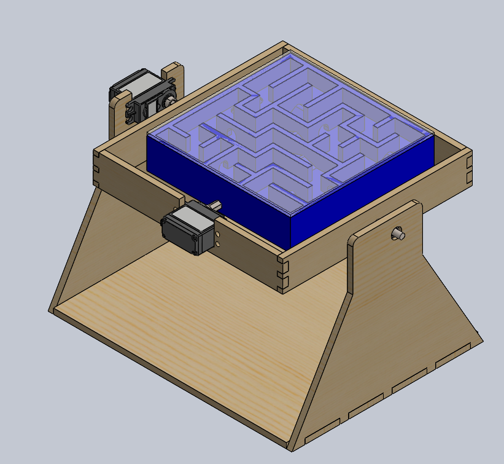
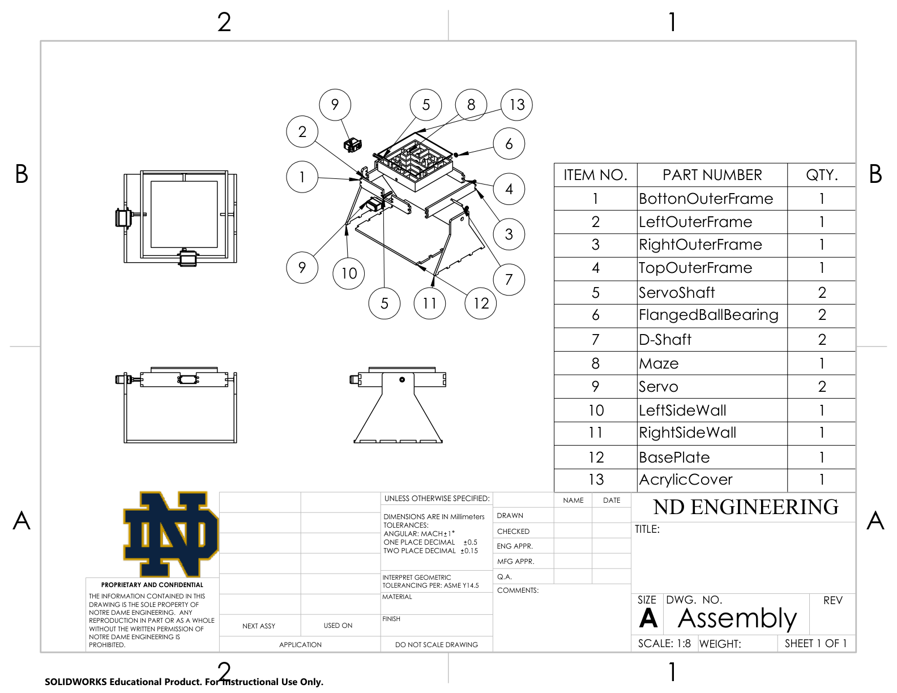
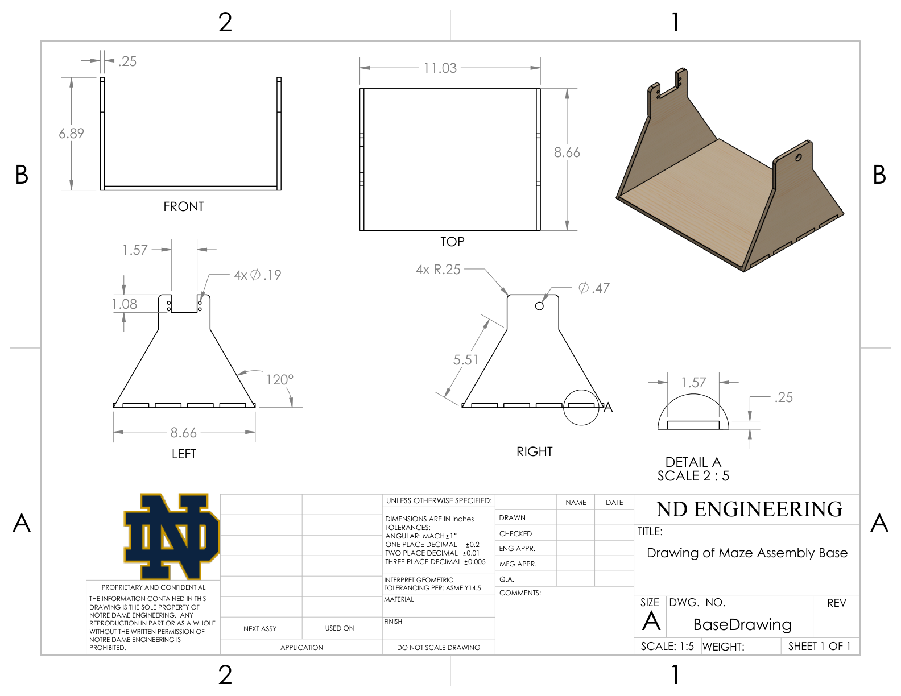
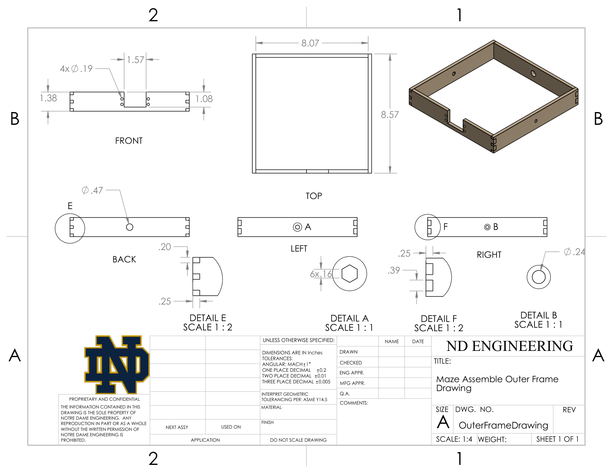

Servo-Controlled Marble Maze

Project Overview
I led the design and fabrication of a functioning two-axis servo-controlled marble maze, taking ownership from concept development through assembly and prototype testing. The system allows a player to tilt the maze in two directions to guide a marble through its paths and obstacles.
Our team collaboratively selected the maze design. I personally created all SolidWorks CAD models for the maze and frames, laser-cut the frames, 3D-printed the maze, and assembled the complete mechanism. I also worked with my teammates to develop the engineering drawings.
Selecting the Mechanism
During concept development, we compared actuation approaches against rotational range, friction, mechanical complexity, and servo torque constraints. An initial ball-and-socket concept presented friction and actuation challenges, leading us to select a nested gimbal configuration.
The selected mechanism supports rotation about two perpendicular axes. One servo tilts the outer frame relative to the base, while the second tilts the maze within that frame. This arrangement provides the two directions of motion needed to control the marble.
CAD Development and Motion Studies
I translated the selected concept into SolidWorks models for the maze and frames, developing the geometry around the servo and shaft interfaces. The assembly integrated custom components with commercial servos, shafts, hubs, and bearings.
I developed motion studies to examine the mechanism’s two-axis movement and understand how the maze and frames interacted throughout rotation. These studies supported the transition from the digital assembly to a physical prototype.
Fabrication and Assembly
I laser-cut the wooden frames and 3D-printed the maze, then assembled the complete system with its servo and shaft hardware. The design combined a rigid support structure with a printed maze and transparent acrylic cover to contain the marble during operation.
Building the prototype required translating the CAD interfaces into physical fits and aligning the rotating components. This stage connected the design work with practical considerations such as manufacturing tolerances, clearances, and assembly access.



Engineering drawings documenting the base and outer-frame geometry, dimensions, and assembly features.
Testing and Design Refinement
Testing revealed clearance and servo-alignment issues that limited the mechanism’s usable rotation. Working with my team, I helped correct these interfaces to increase the available rotation range and make the maze easier to operate.
The testing process demonstrated why a working CAD assembly still needs physical validation. Observing the prototype’s behavior allowed us to identify interference and alignment problems and make targeted changes to the mechanism.
Project Outcome
We produced a functioning two-axis marble maze and refined its movement through prototype testing. My contribution covered the complete path from maze and frame CAD to fabrication and final assembly, alongside collaborative concept selection, drawing development, and testing.
The project strengthened my skills in mechanism design, SolidWorks modeling, fabrication, hardware integration, and using observed performance to guide design changes.